Gotham City
La representación de Ciudad Gótica ha sido como un lugar oscuro y siniestro plagado de crimen, suciedad y corrupción. La geografía de Gotham City, al igual que las geografías de otras ciudades ficticias en el Universo DC, ha variado a lo largo de las décadas, debido a los cambios de escritores, editores e historias. En varios momentos, la representación tiene a Gotham a orillas del "Lago Gotham". Sin embargo, la mayoría de las apariciones ubican a Ciudad Gótica en la costa este de los Estados Unidos. Los mapas que se muestran en varios cómics han representado la ciudad en diferentes lugares. Muchos de los mapas utilizan directamente Manhattan , Vancouver y otras costas reales como base, mientras que otros son completamente originales. Un mapa que muestra Gotham City en relación con Metrópolis , el hogar de Superman , publicado en New Adventures of Superboy #22 ( octubre de 1981), colocó a Gotham City y Metrópolis en lados opuestos de una gran bahía. En La Cosa del Pantano vol. 2, #53 (octubre de 1986) la geografía de Rhode Island fue la base de otro mapa de Gotham City. Los mapas definitivos actuales de Gotham City se basan en los producidos para el arco narrativo "No Man's Land".
Aliados
| Nombre | Imagen |
|---|---|
| Alfred | 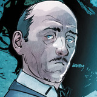 |
| Robin | |
| Comisario James Gordon | 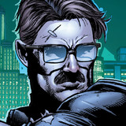 |
| Superman |  |
| Wonder Woman |  |
| Bat Woman | 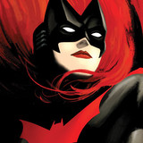 |
Enemigos
| Nombre | Imagen |
|---|---|
| Joker |  |
| Dos caras | 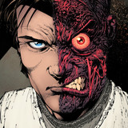 |
| Pinguino | 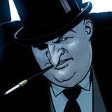 |
| Acertijo | 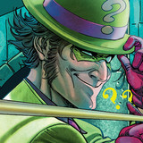 |
| Bane |  |
| Harley Quinn | 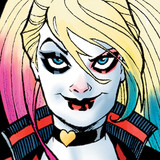 |

Versiones
| Nombre | Imagen |
|---|---|
| Batman que Ríe |  |
| Batman White Knight | 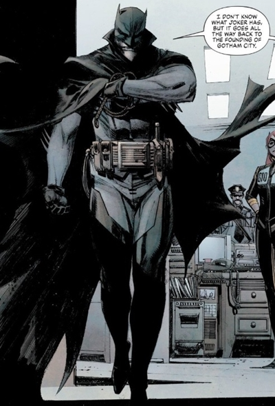 |
| Batman del futuro | 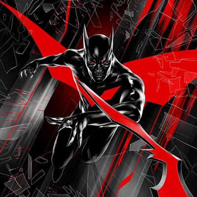 |
| Azrael Batman | 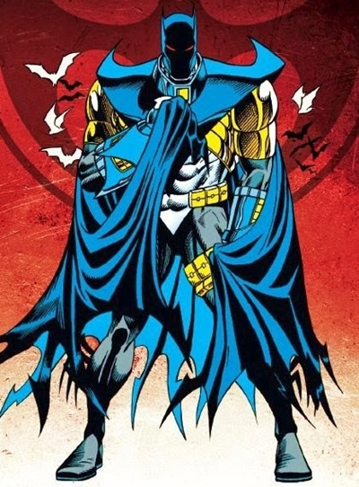 |
| Batman Demonio | 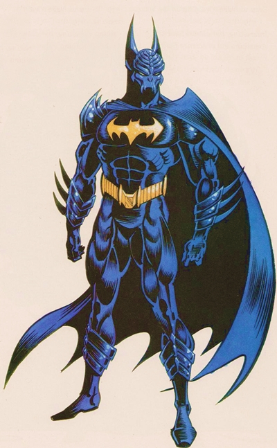 |
| Batman Grim Knight |  |
Peliculas
- Batman: La Pelicula (1966)
- Batman (1989)
- Batman Vuelve(1992)
- Batman Forever(1995)
- Batman & Robin(1997)
- Batman Begins(2005)
- Batman Cabellero Oscuro(2008)
- Batman Caballero Oscuro: La leyenda renace(2012)
- Batman vs Superman: El amanecer de la justicia(2016)
- Escuadron Suicida(2016)
- La liga de la justicia(2017)
- Joker(2019))
- The Batman(2022)
- Radioactive-Man
Proximos proyectos
Warner ha desplegado sus novedades más potentes en un evento lleno de héroes DC entre ellos, el heore mas famosos de la casa Dc Comics y la gigante productora Warner Batman.
Batman y Joker
https://startbootstrap.com/solution/contact-forms